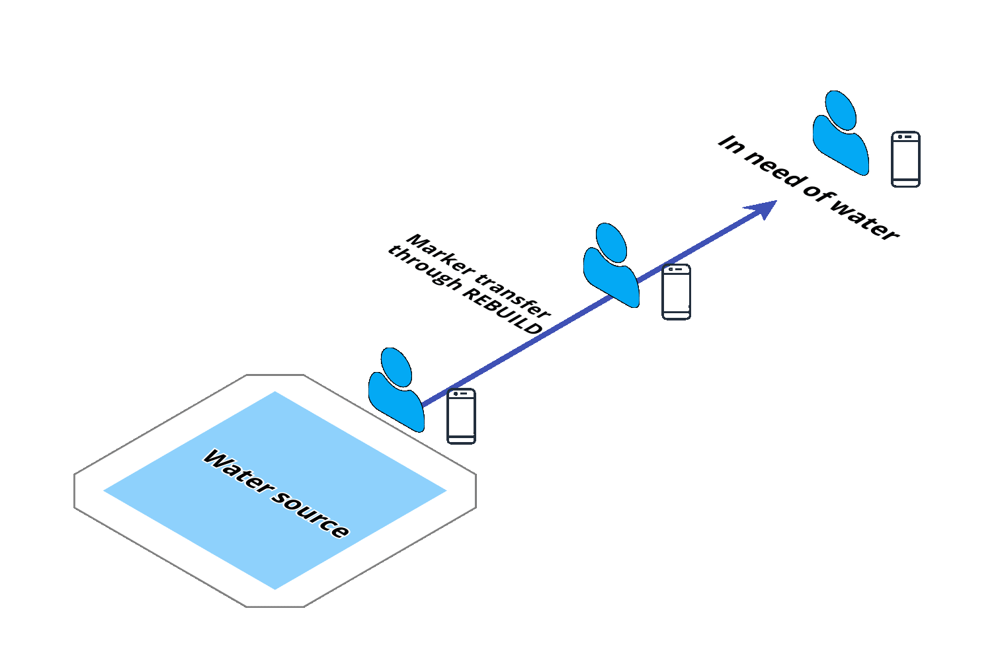

Rebuild is an Android application which creates a mesh network to automatically share vital disaster information data between nearby devices without Wi-Fi or cell service.
The project was created during January 11-12 for nwHacks 2020, an annual hackathon hosted by nwPlus at the University of British Columbia.


For many years, a decentralized network has been the dream of entrepreneurs and technologists. One of the most famous examples is HBO's Silicon Valley. Achieving such a concept would mean the ability to create a community or communication system outside of the vices and restrictions of the traditional internet - unlocking possibilities never before considered.
We took inspiration chiefly from one of our team members' home country, Nepal. The country is ravaged by earthquakes several times every century, destroying homes, communities, and livelihoods. Though seeming catastrophic to us, the phenomenon simply is an unavoidable fact of life for Nepalese people. When an earthquake hits, power lines, water, and food can be unavailable for wide swathes of the country, endangering citizens who need immediate aid but can no longer communicate through traditional phone lines or internet media.
...
Our solution is...
Description...

The mobile application on Android...
Android's Nearby Communications API was the platform on which we built our mesh network.

To visually understand how users would navigate and use the application, graphic designs were created using Adobe XD and passed to the developers.
Disclaimer: This page was created after the hackathon's completion.